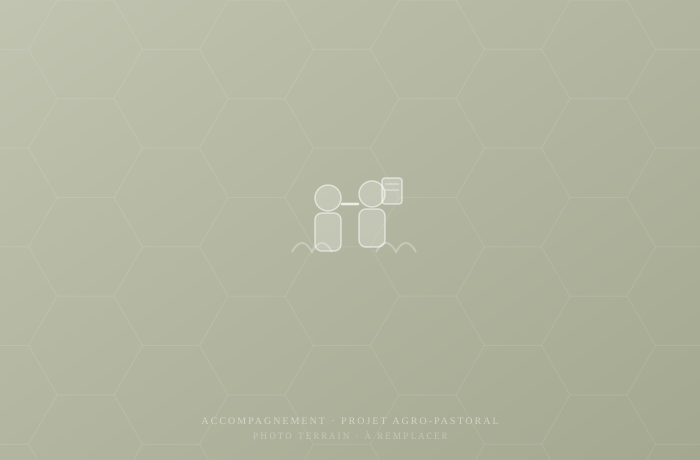
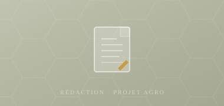

Services agro-pastoraux
Rédaction, formation et suivi de vos projets agro-pastoraux — de l'idée à la mise en œuvre.
Un accompagnement complet
Au-delà de l'apiculture, un appui agro-pastoral à votre service
Au-delà de l'apiculture, CAPANA accompagne les porteurs de projets agro-pastoraux à chaque étape de leur démarche : de la conception du projet à sa mise en œuvre sur le terrain, en passant par la formation et le suivi.
Que vous soyez porteur d'un projet agro-pastoral, en recherche de financement, ou déjà en phase d'exécution, notre équipe vous apporte un appui concret, structuré et adapté à vos besoins.

Nos services
Ce que nous proposons

Rédaction de projets agro-pastoraux
Conception et rédaction de documents de projet structurés, adaptés à vos objectifs et à vos interlocuteurs (institutions, bailleurs, partenaires).
- Analyse du contexte et des besoins
- Structuration du projet et du budget
- Rédaction professionnelle et adaptée
- Documents prêts pour dépôt ou présentation
Formation
Transmission des compétences nécessaires à la conduite d'un projet agro-pastoral, pour que vous puissiez gérer votre activité en toute autonomie.
- Fondements de la gestion agro-pastorale
- Techniques adaptées au contexte local
- Formation pratique sur le terrain
- Accompagnement personnalisé
Suivi de mise en œuvre
Accompagnement dans l'exécution et le suivi de votre projet sur le terrain, pour vous aider à atteindre vos objectifs dans les délais prévus.
- Suivi régulier de l'avancement du projet
- Identification et résolution des difficultés
- Rapports d'avancement si nécessaire
- Ajustement du plan d'action en temps réel
Comment ça fonctionne
Notre processus d'accompagnement
1. Prise de contact
Vous nous présentez votre projet et vos besoins. Nous étudions votre demande ensemble.
2. Diagnostic
Analyse de votre contexte, de vos objectifs et des ressources disponibles pour définir l'approche adaptée.
3. Conception
Rédaction du document de projet, élaboration du plan d'action et du budget prévisionnel.
4. Suivi
Accompagnement sur le terrain tout au long de la mise en œuvre du projet, jusqu'à l'atteinte des résultats.
Une question, une commande, une inscription à une formation ?
L'équipe de CAPANA vous répond. Contactez-nous par téléphone, par e-mail, ou utilisez le formulaire de contact — nous répondons dans les meilleurs délais.
Nous contacter